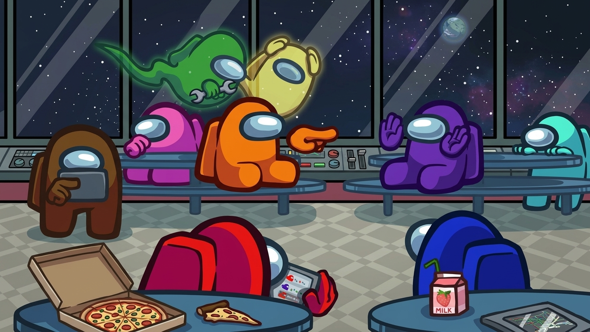

1. Historia, Contexto y Rol Operativo en la Misión
El Tripulante representa el pilar fundamental sobre el que se sostienen todas las operaciones de la flota espacial en los mapas The Skeld, la base aérea MIRA HQ, la instalación científica de Polus y la gigantesca nave The Airship. Como miembro formal del personal técnico, este personaje carece de mutaciones biológicas ofensivas o capacidades sobrenaturales de sabotaje; su fortaleza radica enteramente en su disciplina laboral, su memoria visual y su capacidad de contrastar hechos en asambleas colectivas.
En el trasfondo argumental concebido por Innersloth, los tripulantes son astronautas altamente especializados en ingeniería eléctrica, soporte biológico, comunicaciones y navegación interestelar. Su presencia en cada sector de la nave responde a una necesidad crítica de mantenimiento para evitar que los motores se apaguen o la atmósfera presurizada colapse. Sin embargo, la infiltración de una entidad parasitaria transforma su rutina técnica en una batalla por la preservación de la vida humana.
Desprovisto de armamento, el tripulante estándar depende del diálogo en la mesa de deliberación. Cada tarea terminada acerca a su bando a la victoria automática, lo que convierte a este rol en el motor temporal de la partida: si la tripulación es eficiente reparando los módulos, los impostores se ven forzados a cometer errores de precipitación para no perder por tiempo.
2. Análisis de Mecánicas, Tareas y Protocolos de Victoria
El sistema de juego del tripulante se articula en torno a tres ejes fundamentales que definen el ritmo estratégico de cada ronda:
2.1. Reparación Metódica y Completado de Tareas
La actividad primaria del tripulante consiste en la ejecución metódica de secuencias de tareas asignadas al inicio de la misión, categorizadas técnicamente en comunes, cortas y largas. Tareas complejas como la calibración de distribuidores en la sala de Electricidad, el desvío de flujo energético o el vaciado de conductos de basura residual exigen concentración absoluta e inmovilidad frente a los terminales, instantes de alta vulnerabilidad en los que el jugador pierde conciencia de su entorno periférico. Cada tarea resuelta incrementa de forma irreversible la barra de progreso colectivo; alcanzar el cien por ciento de este indicador representa una victoria inmediata e inapelable para la tripulación, independientemente de cuántos impostores continúen activos a bordo.
2.2. Reporte Forense Inmediato de Cadáveres
Al localizar los restos óseos de un compañero caído en cualquier sector de la nave, el tripulante dispone de la facultad de activar el megáfono de reporte en cuanto entra en su línea de visión directa. Esta acción interrumpe al instante cualquier sabotaje menor activo y transporta a todos los supervivientes a la mesa de asamblea central para iniciar la fase deliberativa. El reporte oportuno exige agudeza y memoria espacial: el tripulante informante debe comunicar de inmediato la habitación exacta del hallazgo, el tiempo estimado desde la última vez que vio a la víctima con vida y la lista de tripulantes observados saliendo de los corredores adyacentes.
2.3. Activación Estratégica del Botón de Emergencia
Ubicado en la consola central del mapa, el botón de emergencia permite convocar a una reunión extraordinaria sin necesidad de haber hallado un cadáver. Con un límite reglamentario de uno o dos usos por jugador a lo largo de la partida, este recurso táctico no debe desperdiciarse en sospechas infundadas. Su uso óptimo ocurre cuando un tripulante presencia a un impostor ingresando o saliendo de una rejilla de ventilación, cuando descubre inconsistencias flagrantes en las coartadas de un compañero o para neutralizar una emboscada inminente durante un corte de comunicaciones.
3. Ventajas Estratégicas y Puntos Vulnerables
El balance operacional del tripulante estándar frente a las amenazas alienígenas presenta contrastes marcados que todo analista de juego debe ponderar:
3.1. Ventajas Operativas y Fortalezas Colectivas
La principal fortaleza del bando de la tripulación reside en su superioridad numérica inicial. Al controlar la mayoría absoluta de los votos en las asambleas, pueden desterrar a cualquier sospechoso mediante el consenso democrático. Asimismo, disponen de una doble condición de victoria simultánea: pueden ganar expulsando a todos los impostores o finalizando la totalidad de las tareas. A ello se suma el valor probatorio de las tareas visuales —como el escaneo biomédico en la enfermería o el disparo a asteroides en armería— que ofrecen coartadas visualmente auditables y verificables por los demás compañeros, además de la persistencia de los fantasmas tras morir, permitiendo seguir completando tareas hasta el desenlace de la partida.
3.2. Vulnerabilidades Críticas y Limitaciones Operativas
Por el contrario, el tripulante carece de cualquier capacidad ofensiva o defensiva física, quedando en absoluta indefensión ante los ataques directos cuerpo a cuerpo de los impostores. Su percepción visual es sumamente sensible a los sabotajes eléctricos, reduciéndose a un radio ciego durante los cortes de luz. Adicionalmente, tiene prohibido el tránsito por conductos de ventilación, viéndose obligado a recorrer largos pasillos a pie. Finalmente, su naturaleza psicológica lo vuelve vulnerable a la confusión, la histeria colectiva y las mentiras orquestadas por impostores experimentados en las fases de debate.
4. Estrategia Avanzada y Sociometría del Debate
El éxito competitivo como tripulante no se define por la rapidez del teclado, sino por la rigurosidad deductiva aplicada en cada fase del juego:
4.1. El Protocolo de Binomio Certificado (Buddy System)
La técnica más efectiva para neutralizar a los infiltrados consiste en el desplazamiento coordinado en parejas de mutua confianza. Una vez que dos jugadores confirman la inocencia del otro mediante la observación directa de una tarea visual, forman un binomio inquebrantable. Al recorrer los módulos juntos, cualquier ataque hostil requerirá la acción sincronizada de dos impostores a la vez, lo que reduce sustancialmente el margen de maniobra del enemigo y asegura un testimonio incuestionable si uno de los dos es atacado.
4.2. La Continuidad Laboral del Fantasma Incansable
Uno de los errores más graves en novatos es abandonar la partida o permanecer inactivo al sufrir un homicidio. En Among Us, el espíritu del tripulante conserva su lista de tareas intacta y adquiere la habilidad de flotar a través de mamparos y compuertas selladas sin restricciones de colisión física. Esta libertad de movimiento permite concluir las tareas restantes en menos de la mitad del tiempo normal, inclinando la balanza de manera decisiva hacia la victoria colectiva por finalización de objetivos.
5. Perfil Operativo y Parámetros Técnicos
Desde la perspectiva de diseño lúdico y balance de juego estandarizado, el Tripulante se caracteriza por los siguientes parámetros normados:
- Facción Asignada: Bando de la Tripulación (personal civil, técnico y de exploración científica).
- Clasificación Funcional: Rol base esencial, indispensable para el ritmo y la victoria temporal de la partida.
- Condiciones de Victoria: Cumplimiento del 100% de la barra colectiva de tareas o expulsión democrática de todos los impostores.
- Rango de Visión Estándar: Factor 1.0x (configurable según las reglas de la sala y dependiente del alumbrado de la nave).
- Acceso a Ductos de Ventilación: No permitido (restringido con exclusividad a roles mecánicos especializados o impostores).
- Habilidad Espectral Post-mórtem: Realización continua de tareas y desplazamiento etéreo a través de muros y esclusas.
- Nivel de Dificultad: Fácil de controlar mecánicamente, pero de alta complejidad táctica en argumentación y memoria espacial.
6. Recursos Multimedia Obligatorios: Sonido y Vídeo
Audio de Mantenimiento y Pasos
Efectos sonoros del escáner biomédico y tareas de la tripulación.
Vídeo Demostrativo del Tripulante
Secuencia visual de resolución de tareas y reporte de emergencias.
7. Archivos Gráficos y Evidencias Visuales
